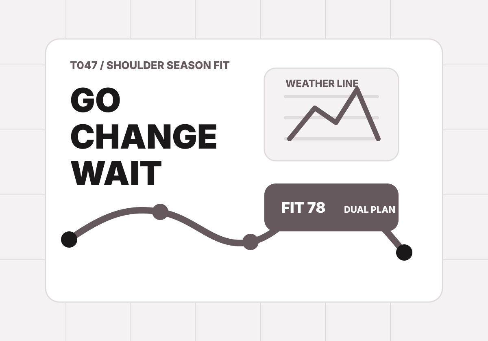

T047 / Shoulder season fit
淡季不是便宜版旺季，是另一套旅行遊戲。
如果你怕天氣、怕店休、怕拍不到照片，淡季省下的錢可能會變成焦慮。這個工具把你的容忍度和目的地風險算清楚，決定要不要淡季出發。

Travel contract
哪些東西不能犧牲？
Result
按下測驗後，這裡會產生淡季適配卡。
結果會包含適配分數、去/改/等的判斷、好天/壞天雙路線、訂房訂票規則、社群分享文與 ChillOut prompt。
T047 / Shoulder season fit
如果你怕天氣、怕店休、怕拍不到照片，淡季省下的錢可能會變成焦慮。這個工具把你的容忍度和目的地風險算清楚，決定要不要淡季出發。

Travel contract
Result
結果會包含適配分數、去/改/等的判斷、好天/壞天雙路線、訂房訂票規則、社群分享文與 ChillOut prompt。